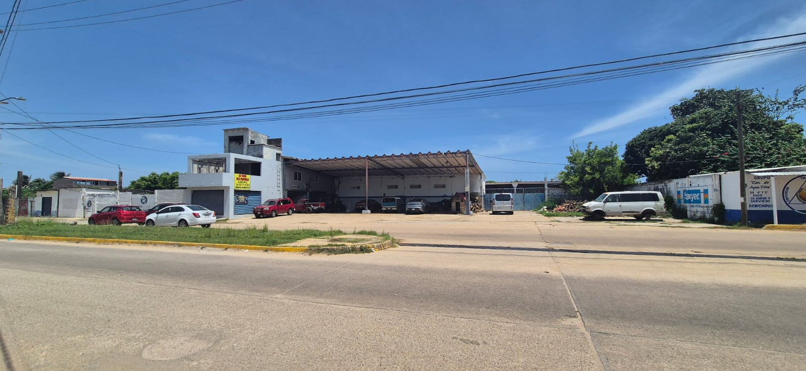
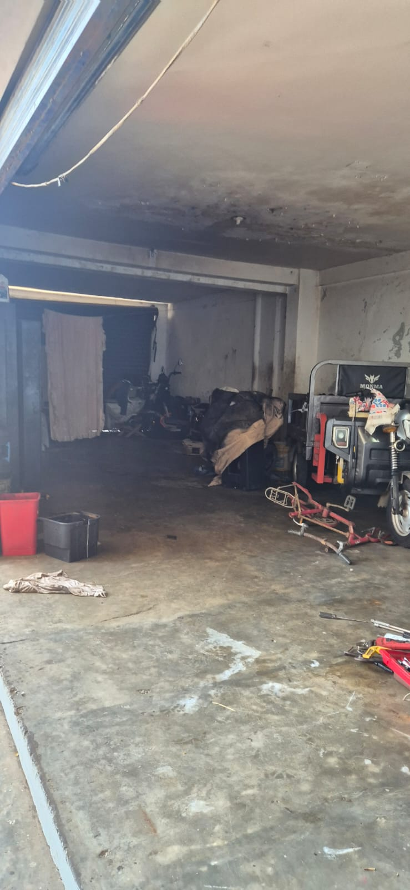
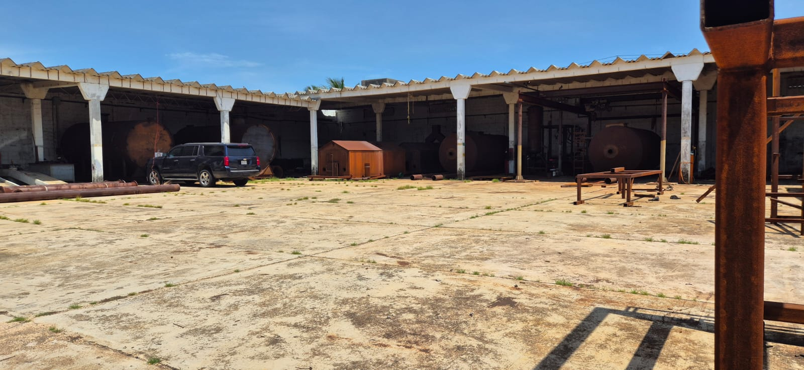
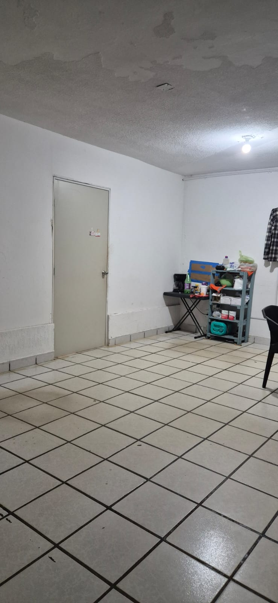
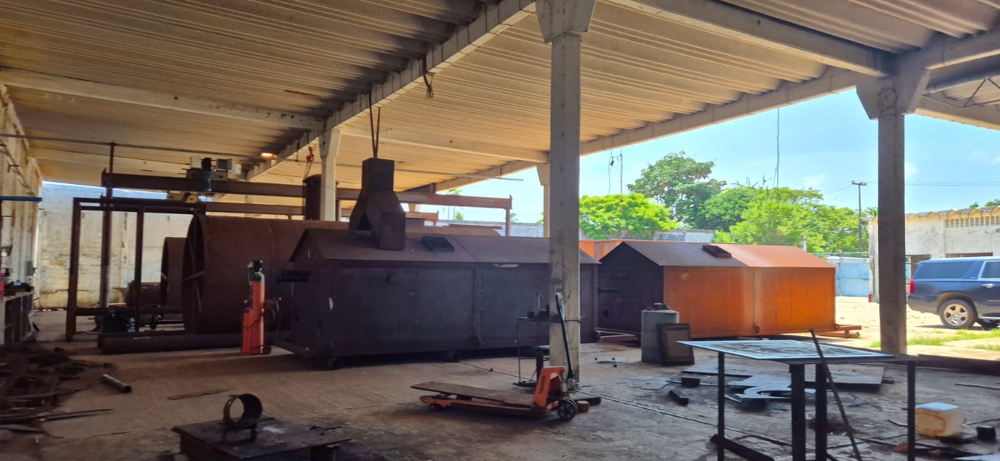
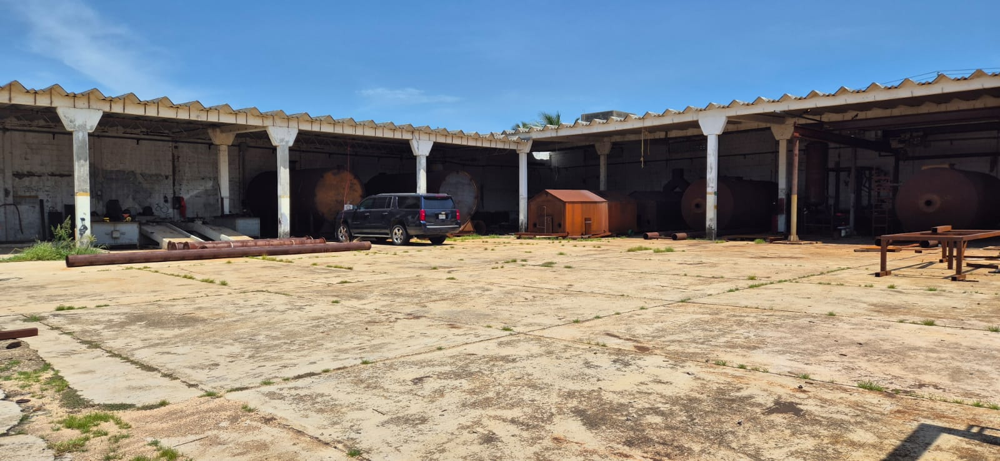
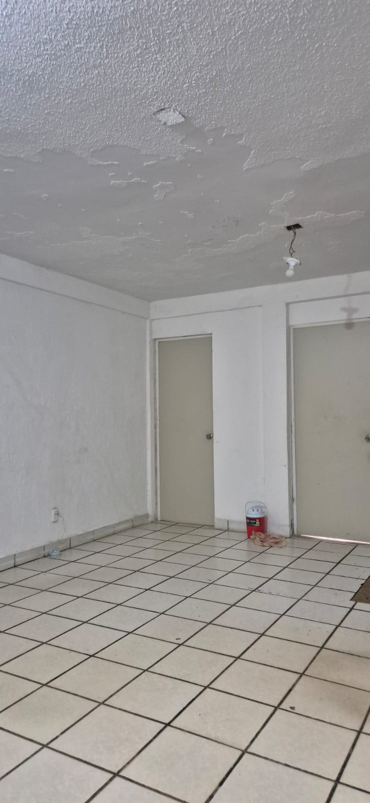
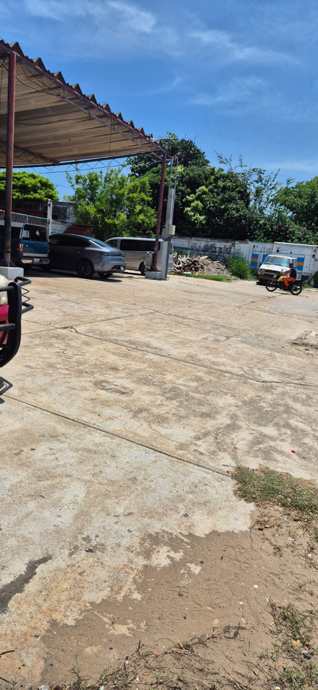
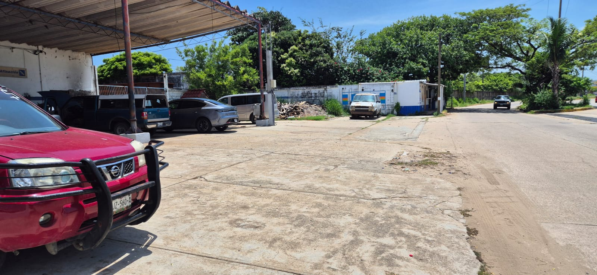
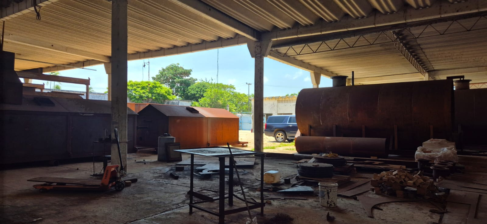
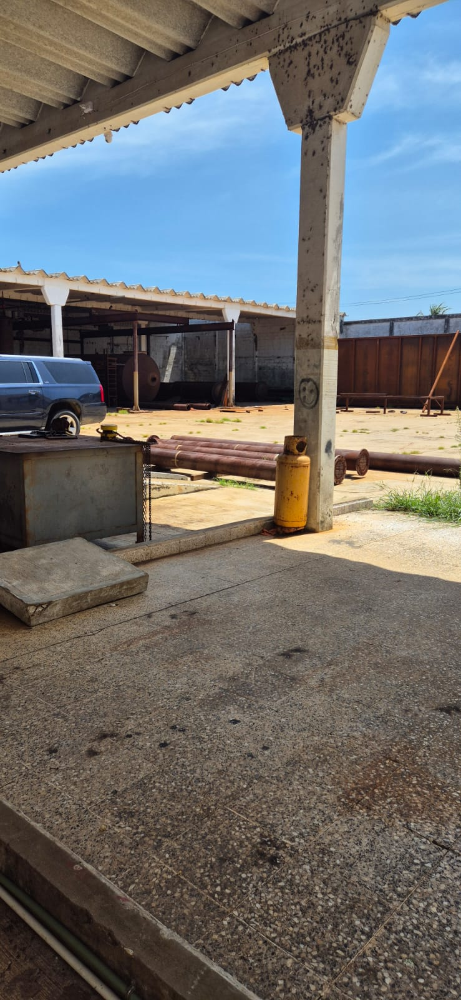
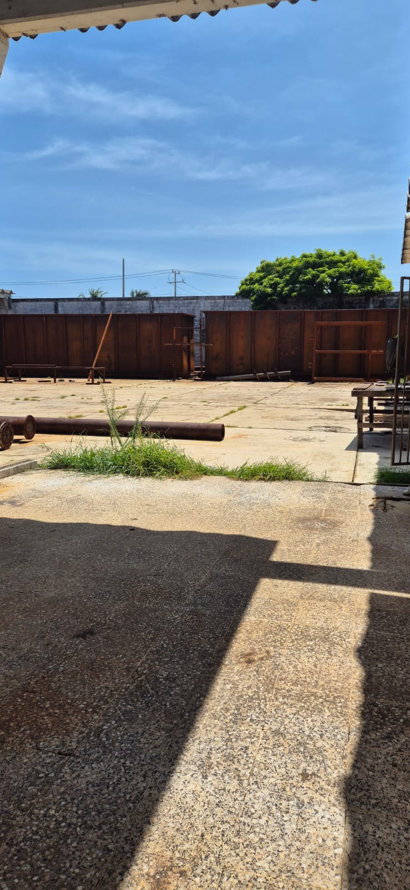
MX$6,000,000 a tratar
Col. Miramar, Allende, Mpio. De Coatzacoalcos, Ver. C.P. 96380.
Superficie de la propiedad 2,400 mts2 (40 mts de frente por 60 mts de fondo).
Cuenta con escrituras ante Notario Público de un solo dueño.
Excelente y estratégica ubicación geográfica ( a 2,500 mts del Centro de la Ciudad de Coatzacoalcos vía túnel sumergido)
Salida rápida tanto al Centro de la Ciudad, como hacia la Zona Industrial Pajaritos (amplio retorno para unidades pesadas exactamente frente a la propiedad).
Salida rápida directa sin restricción para vehículos pesados a la carretera Federal 180 a Villahermosa y el sureste del País.
Salida rápida directa sin restricción para vehículos pesados a la autopista 145D a la Ciudad de México y centro del País.
Barda perimetral completa de 6 mts de altura.
Toda la propiedad cuenta completamente con piso de concreto armado de 15 cms de espesor, apto para vehículos pesados, y con todos los niveles de pisos arriba del nivel de calle.
Única propiedad en la zona con drenaje pluvial directo a Laguna.
Fosa séptica para 5 baños.
250 mts2 de oficinas con dos baños (uno completo).
Más de 1,000 mts2 techados con lámina de asbesto a mínimo 5.5 mts de altura libre (con capacidad para hasta 30 camiones de volteo de 7 m3 bajo techo).
Amplio patio interior de maniobras para vehículos pesados, tracto camiones, grúas, etc.
Área para oficinas en planta alta y baja.
Dos accesorias comerciales con cortinas de acero en parte frontal.
Bodega de más de 50 mts2.
Fosa de concreto para revisión rápida de vehículos.
Rampa de concreto armado apta para camiones (Rep. Escapes. Etc).
Baños para trabajadores.
Área de estacionamiento para visitantes de 150 mts2.
Acceso a la red de agua potable Municipal.
Acceso a la red de Telmex.
Acceso a la red de CFE (con preparación subterránea completa para instalar su propia subestación eléctrica).
Contactar